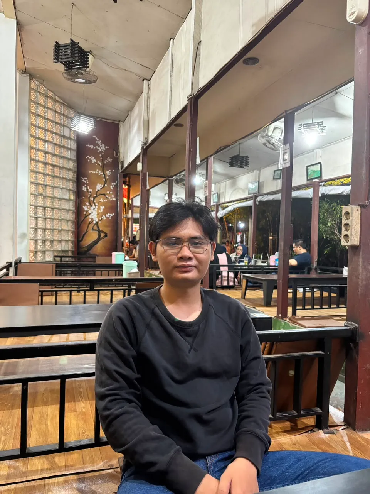
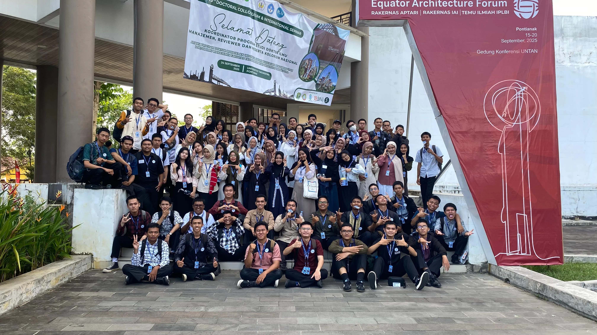
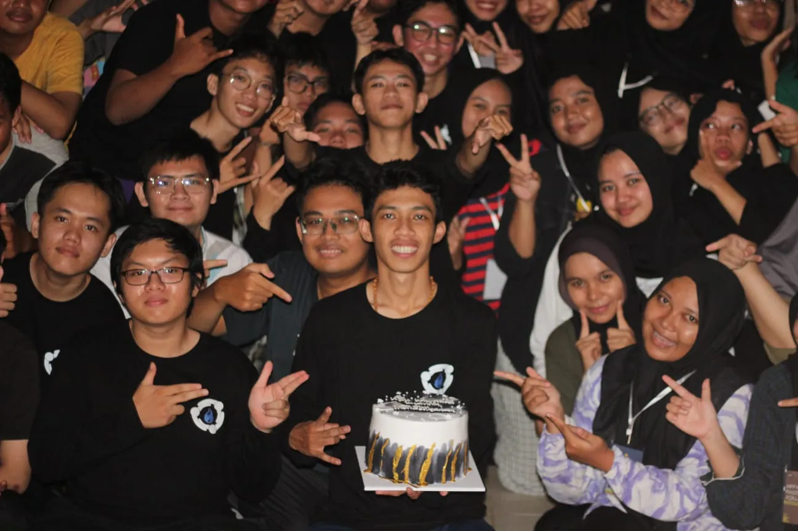
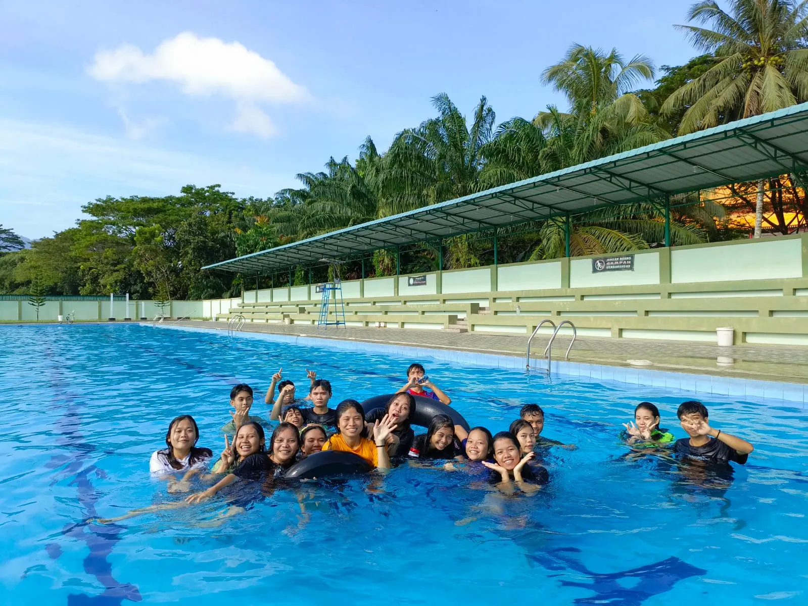

Tentang Saya
Saya adalah pribadi yang senang mencoba hal baru, mengembangkan diri, dan mengabadikan berbagai momen yang saya temui dalam keseharian.
Bagi saya, pengalaman tidak hanya berasal dari kegiatan belajar, tetapi juga dari kesempatan untuk bertemu orang lain, bekerja sama, dan menikmati berbagai kegiatan bersama.
Halaman ini berisi beberapa dokumentasi kegiatan dan momen yang menjadi bagian dari perjalanan saya.
Kegiatan dan Momen

Foto Bersama Sistem Informasi Angkatan 2025
Ini adalah salah satu foto yang cukup memorial karena kami dapat berfoto bersama secara lengkap.

Malam Puncak
Momen kebersamaan dalam malam Keakraban Penutupan Kegitan PMKM dan Partisi 2025.

Masa SMA
Salah satu foto yang sangat memorial bagi saya adalah foto-foto masa SMA.